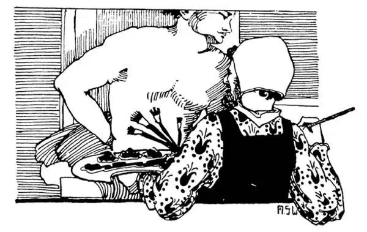

66
Rebirth
再生

HERE is a long word for you; it is Renaissance.
It means rebirth .
Of course, nothing can be born again. But people call this time we have now reached the Renaissance, the time of rebirth. Here is the reason why they call it that.
You remember the Age of Pericles, don't you, when such beautiful sculptures and buildings were made in Athens? Well, in the fifteen hundreds not everyone was rushing off to the New World in search of adventure. While the voyages that I have told you about were taking place, there were living and working in Italy some of the greatest artists the world has ever known.
Architects built beautiful buildings something like the old Greek and Roman temples. Sculptors made statues that were almost as beautiful as those of Phidias. People began to take an interest once more in the old Greek writers, whose books were now printed for everyone to read. It seemed almost as if Athens in the Age of Pericles had been born again. That is why people speak of this time as the Renaissance.
One of the greatest of these artists of the Renaissance was a man named Michelangelo. But Michelangelo was not just a painter; he was a sculptor, an architect, and a poet as well. Michelangelo thought nothing of spending years working on any statue or painting that he was doing. When he had finished, he had done something that people even now go from all over the world to see.
Nowadays, sculptors first model a statue in clay and then copy it in stone or cast it in bronze, but Michelangelo did not do this. He cut his figures directly out of the stone, without making a model first. It was as if he saw the figure imprisoned in the stone and then cut away the part that closed the figure in.
A large block of marble had been spoiled by another sculptor. Michelangelo saw a figure of David in it, and, setting to work, he cut this young athlete out .
He made also a statue of Moses sitting down. It is now in a church in Rome, and when you walk up to it, it is so lifelike that it seems as if you were in the presence of the prophet Moses himself. The guide tells you that when Michelangelo had finished this statue of Moses he was so thrilled by the figure he had created that, feeling it must come to life, he struck it on the knee with his hammer and commanded as he did so, “Stand up!” And then the guide shows you a crack in the marble to prove that the story is true!

Michelangelo at work（米开朗基罗在工作）
The pope wanted Michelangelo to paint the ceiling of the Sistine Chapel. This is the pope's private chapel in Rome. At first Michelangelo didn't want to do the painting. He told the pope he was a sculptor and not a painter. But the pope insisted, and Michelangelo at last gave in. Once having agreed to do the work, however, Michelangelo gave himself to it heart and soul.
For four years he lived in this room—the Sistine Chapel—and hardly ever left it day or night. Beneath the ceiling, he built himself a platform, and lying on this scaffold, he would read poetry and the Bible and work as the spirit moved him. Locking himself in, he would let no one enter, not even the pope himself. He wanted to be alone and to be left alone.
One day the pope, finding a door left open went into the chapel to see how things were getting along. Michelangelo, thereupon, accidentally dropped some of his tools, and they just barely missed hitting the pope on the head. The pope was very angry, but he never returned uninvited again.
People now go from all over the world to see this ceiling, which only can be viewed comfortably by lying on the floor or by looking at it in a mirror.
Michelangelo lived to be nearly ninety years old, yet he had very little to do with people. He could not stand being bored by them. He lived apart, in the company of the gods and angels that he painted.
Raphael was another famous Italian artist. He lived at the same time as Michelangelo. Raphael, however, was just the opposite of Michelangelo in most ways. Michelangelo liked to be by himself. Raphael loved company. He was very popular and constantly surrounded by his friends and admirers, for everybody loved him on account of his genius and kindly nature. Young men swarmed about him, drinking in his words and humbly copying everything he did. He had fifty or more pupils studying and painting under him, and they went along with him whenever he went out even for a walk. They almost worshiped the ground he walked on.
Raphael painted many beautiful pictures. One of the best known is School of Athens . He painted many pictures of the Virgin Mary with the infant Jesus. These are called Madonnas . One of the best known of these pictures of Mary and the Christ child is called Sistine Madonna . It was painted for a little church, but it is now in a great picture-gallery.
Raphael died when he was still a young man, but he worked so hard and so continuously that he has left a large number of pictures. He painted only the very important parts of his pictures himself—perhaps only the faces. The bodies and hands and clothing he usually left to be painted by his pupils. They were glad to be allowed to do even a finger of a painting on which their master had worked.
Leonardo da Vinci is another great artist who lived at this time. He could do any number of things exceptionally well. He would be called a jack-of all-trades, but unlike most jacks-of-all-trades, he was good at everything. He was an artist, an engineer, a poet, and a scientist. He made, however, very few paintings, because he did so many things besides, but these few pictures are beautiful and famous. One of these is The Last Supper . It is considered, as is the Sistine Madonna , one of the greatest paintings in the world. Unfortunately, it was painted directly on a plastered wall, and in the course of time much of the plaster with the paint has peeled off, so that there was little left of the original painting. Recently this painting was restored. The colors were brightened up so, once again, we can see its full beauty.
Leonardo usually painted his women smiling. One of his most famous paintings is the picture of a woman called Mona Lisa . She has a smile that is called quizzical . You can hardly tell whether she is smiling at you or with you.
【中文阅读】
你见过“复兴”这个单词吗？
这个词的意思是“再生”。
当然，没有什么能够再生。但是人们把我们现在讲到的这一时期叫做文艺复兴 时期，也就是再生的时期。接下来我们就要说说人们为什么这么称呼它。
还记得伯里克利时代，是不是？就是雅典制作美丽的雕刻和建造美丽的建筑物的那个时代，当然喽，在15世纪并不是每一个人都冲向新大陆去探险。当航海家正在探险的时候（他们的故事已经读过了），在意大利却平静地生活和工作着一些艺术家。他们迄今仍是世界上最伟大的艺术家。
建筑师建造的美丽房屋有些像古希腊和古罗马的神庙。雕刻家制作的雕像几乎和菲迪亚斯的雕像一样美丽。人们又一次开始对古希腊的作家产生了兴趣，他们的书现在被重新印刷，人人都可以阅读。看起来好像伯里克利时代的雅典人又复活了。这就是为什么人们将这一时期称为文艺复兴时期。
文艺复兴时期最伟大的艺术家之一是个名叫米开朗基罗的人。但是米开朗基罗不仅仅是一位画家，他还是雕刻家、建筑师和诗人。米开朗基罗认为自己花数年时间去雕一尊像或创作一幅画是极为正常的了。当他完成一件作品时，也就完成了一个杰作，这样的杰作即使到现在还吸引人们从世界各地前来欣赏。
如今，雕刻家先用黏土做一个雕像的模型，然后按这个模型把石头雕刻出来或用青铜浇铸出来，但是米开朗基罗不是这样做。他直接把石块雕成雕像，不需要预先做模型。就好像他看到雕像被封闭在石头里，然后他把包裹雕像的那部分石头凿掉就行了。
曾有很大一块大理石被另一位雕刻家弄坏了。米开朗基罗却看到了大卫的身影“在里面”，于是劲头十足地动起手来，把这位身强力壮的年轻人给雕“出来”了。
他还雕刻了一尊摩西的座像。现在这座雕像还在罗马的一座教堂里，当你走近它的时候，它看起来栩栩如生，仿佛你就在先知摩西本人的面前。导游会告诉你当米开朗基罗完成这尊摩西雕像时，他也为自己创作的形象震撼了，觉得它一定会醒过来，于是就用锤子敲了一下雕像的膝盖，还命令道“站起来！”接着导游会指着大理石像上的一处裂纹，向你证明这个故事是真的！
教皇想要米开朗基罗为西斯廷教堂绘制穹顶壁画。这是教皇在罗马的私人礼拜堂。开始，米开朗基罗不想干。他告诉教皇自己是雕刻家，不是画家。但是教皇坚持要他做，最后米开朗基罗让步了。一旦答应做这件事，米开朗基罗就全身心地投入其中了。
整整四年，他就住在这堂里——西斯廷教堂——日日夜夜几乎没有离开过。在穹顶下方，他为自己建了一个平台，总是躺在上面，阅读诗歌和圣经，想工作了，他就起身工作。他把自己锁在里面，不让任何人进入，甚至教皇本人也不行。他只想独自待着，不愿被别人干扰。
一天，教皇发现有扇门开着，就进了教堂想看看工作进展得如何。就在此时米开朗基罗失手丢下一些工具，差点砸到教皇的脑袋。教皇非常生气，但是从那以后他再也没进教堂了，除非受到邀请。
如今人们从世界各地前来观赏这幅穹顶壁画，不过要想舒服自在地观赏这幅画，只有躺在地上或者朝镜子里看。
米开朗基罗活到将近90岁，不过他几乎不与人来往。和别人在一起，他觉得厌 烦，怎么也受不了。所以他离群索居，只有他画的神和天使陪伴着他。
拉斐尔是另一位著名的意大利画家。他和米开朗基罗生活在同一时期。不过拉斐尔在大多数方面都和米开朗基罗正好相反。米开朗基罗喜欢独自一人待着，拉斐尔却喜欢有人陪伴。他非常受人喜爱，身边总是围绕着他的朋友和仰慕者，由于他非凡的天分和温和的性情，人人都喜爱他。年轻人簇拥在他周围，全神贯注地聆听他说话，谦恭地模仿他做的每一件事。他至少有五十名学生在他门下学习和作画，每当他出去，甚至只是散个步，他们也和他一起。他们对他的仰慕达到了痴迷的程度。
拉斐尔画了许多美丽的画，最著名的一幅是《雅典学派》。他画了许多圣母马利亚和圣婴耶稣的画像。这些画像被称为“圣母像”。圣母像一般都有幼年的耶稣，最著名的一幅是《西斯廷圣母》。它是为一座小教堂画的，不过如今它陈列在一家大型画廊里。
拉斐尔去世时还很年轻，但是他勤勉创作，持之以恒，所以留下了大量的画作。他自己只画作品中关键的部分——大概只是脸部。他一般会把身体、手和衣服留给他的学生去画。哪怕只被允许在老师的画作上画一根手指，他们都很知足。
列奥纳多•达•芬奇是生活在这个时期的另一位伟大的艺术家。什么事情他都能够做得特别出色。他可谓是“万能博士”，但是跟大多数“万能博士”不一样的是，他样样精通。他既是艺术家，又是工程师，即是诗人，又是科学家。不过他只创作了很少几幅画，因为他涉足的领域太多了，但是仅有的几幅画都很美也很出名。其中一幅是《最后的晚餐》，这幅画和《西斯廷圣母》一样，被认为是世界上最杰出的画作之一。令人遗憾的是，这幅画是直接画在抹了灰的泥墙上的，随着岁月的推移，许多灰泥连着彩色涂层一起脱落了，所以原来的画作现在所剩无几了。最近，这幅画被修复了。色彩变得鲜艳，这样我们又能再次观赏到它美丽的全貌了。
列奥纳多经常画微笑的女人。他最出名的画作之一是一个名叫“蒙娜丽莎”的女人的画像。她脸上露出的微笑被认为是“揶揄”的笑。你很难分清她是在“对着”你微笑，还是“和你一起”微笑。